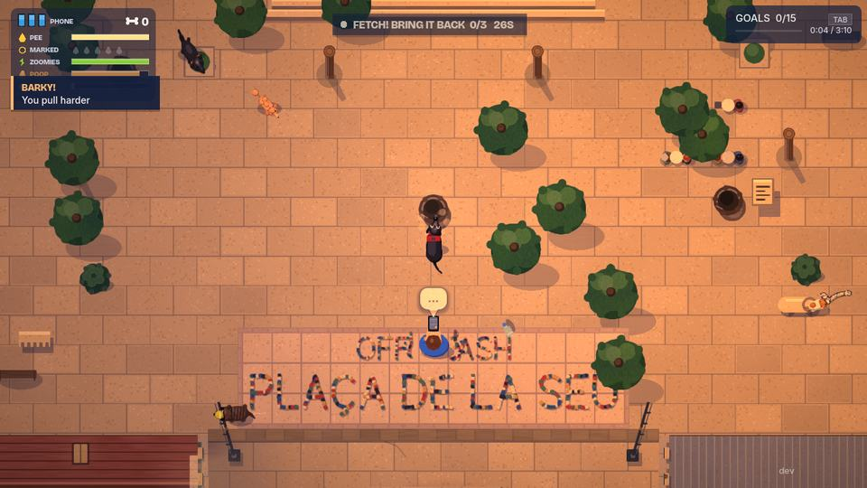

Tarragona
Roman walls above the dusk sea
Roman Tarragona at dusk: from the Balcó del Mediterrani's railing above the sea, round the rim of the amphitheatre, up the Rambla Nova past the casteller monument and a practice in the plaça, through the Roman walls to the cathedral square. Mark the Roman stones and keep clear while the tower is crowned.
- Off-leash stop
- PLAÇA DE LA SEU (Fenced dog yard)
- Beat the clock
- Under 3:10
Screenshots



Goals (15)
- Mark 5 spots
- Have 4 good long sniffs
- Get the phone home without a scratch
- Get yourself home without a bump
- Get your business bagged
- Bring the ball back 3 times
- Scarf down 2 dropped snacks
- Mark 3 Roman stones
- Steer clear for a casteller crowning
- Share the Balcó view with your human
- Land an x3 trick combo
- Swipe the olive bowl off the cathedral steps
- Spell LEASH
- Find the hidden pernil
- Beat the clock (under 3:10)